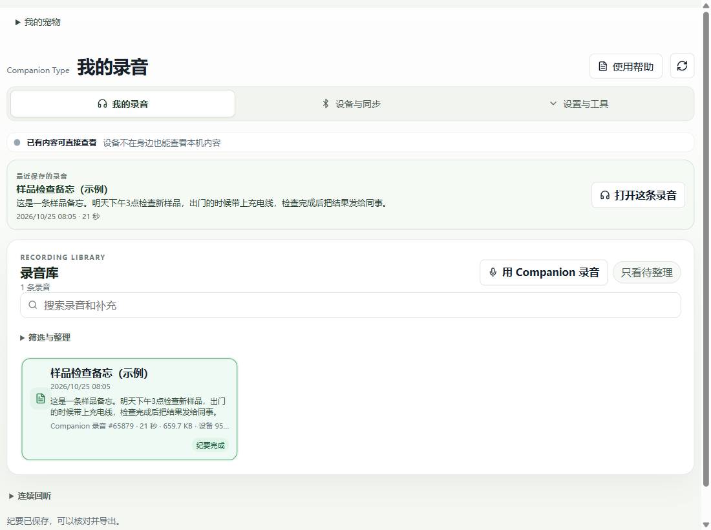
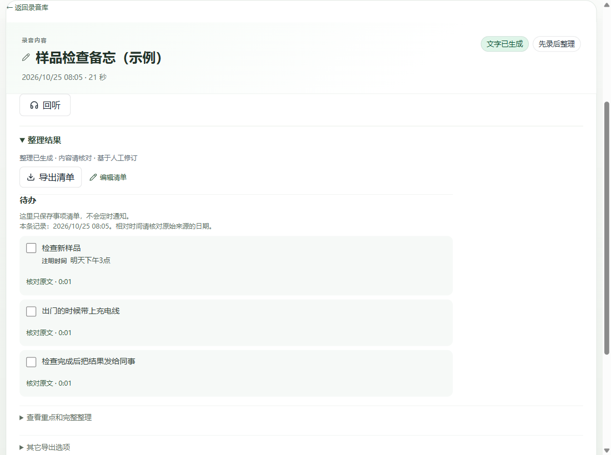

Using Companion and Type
Record on Companion, then use Type on Windows to find the audio, read its transcript and organize actions. Content already saved on your computer remains readable when the device is away.
This is a development release. Use the matching Windows installer supplied with your delivery. Public downloads, account entitlements and support contacts follow the actual release notice. Native clients for other systems are delivered separately.
Your first voice memo
- Install the supplied Windows MSI and open Companion Type. Routine data communication uses Bluetooth; USB-C supplies power.
- Open 设备与同步 (Device and sync). Enable pairing in the pet's menu, then choose 扫描设备 (Scan devices) and 连接 Companion (Connect Companion). Confirm the system pairing prompt. 检查设备 (Check device) reads status and synchronizes device time; it does not start recording.
- In that page's 用 Companion 录音 area, select 开始录音 (Start recording), speak briefly, then select 停止并保存 (Stop and save). This route saves original device audio before optional processing; a transcription service is not required to capture it. Use the duration and capacity shown for this attempt.
- Wait for the original audio to arrive and be saved locally. Open 我的录音 (My recordings). The latest item has 打开这条录音 (Open this recording); you can also search by title, date, duration or a remembered phrase.
- Read existing text immediately. An audio-only item offers 转文字 (Transcribe); use 整理重点 (Organize key points) when needed. 回听 (Playback) is optional, not a prerequisite to reading text.
Device saved and computer received are separate steps. A device save notice does not mean the computer has the complete file. Retain device audio while transfer is incomplete.

Screenshots contain example material, not your recordings or live device readings. Bold Chinese labels identify controls in the current Windows interface.
Where to go
| Page | What it is for |
|---|---|
| 我的录音 | Find recordings, read or play them, rename, edit results and notes, export and manage local content. |
| 设备与同步 | Connect and pair, read device capacity and status, control device recording and receive audio. |
| 设置与工具 | Existing service configuration, additional device settings, updates and diagnostics. You do not need this page simply to find a recording. |
If an item is missing, clear search and check the pending-only or other filters in My recordings. If audio is on the device but not the computer, check transfer progress in Device and sync.
Recording away from the computer
The following entries control the same Companion recording. Choose one convenient method.
| Entry | Start and stop |
|---|---|
| Physical button | While awake, hold for about one second to start; hold again to stop. The first complete press from sleep only wakes the pet. |
| Touch shortcut | By default, double-tap the bottom-left of the pet home screen to start, and double-tap the recording screen to stop. Follow the saved gesture if changed; a bottom-left rightward pull is another selectable start gesture. |
| Device menu | Hold still on the home screen for about three seconds. Release after the four blocks complete, then choose 录音 → 开始录音. |
A short physical press during recording pauses or resumes it; a long press stops it. Check the actual state rather than repeatedly submitting an uncertain action.
The current development firmware also retains screen-debug assignments: a short press on the awake, idle pet home screen requests a fast full refresh; a double press requests a flashing cleaning refresh. Neither starts recording. A faulty panel may still fail to complete the request. The first press from sleep only wakes; recording, menu and update states have different button behavior.
Browse menus vertically and use the displayed navigation to return. Physical touch, orientation and sound depend on the matching hardware; a browser preview cannot verify those interactions.
Transcript Actions and Notes
Speech recognition and organized results are different layers. Check important names, numbers and dates.
| What to change | Entry |
|---|---|
| A recognition error or speaker label | Expand 原话与补充, select 核对文字 and 修正文字, then save the revision. Original recognition and audio remain. |
| An organized action or statement | Select 编辑清单 or 编辑整理内容 in the result, then 保存修改. |
| Background not spoken in the recording | Open 补充一句（背景备注）, write it and select 保存备注. It is stored separately, not presented as original speech or silently added to existing results. |
When regenerating, explicitly choose 原话＋已保存补充 to include saved notes, or 仅原话 to use only the transcript. Regeneration can replace manual edits in the selected result; export important edits first.
Write the action in its content field and time or owner separately. The checklist does not send scheduled notifications. “Tomorrow” and “next week” retain the recording's context; compare them with its date.
Exactly matched items offer 核对原文 with a time. Rewritten items that cannot be matched offer 查看原话 without inventing a timestamp.

Wait for a saved confirmation. If the page says unsaved or unconfirmed, retain the input and keep the application open.
Export and Keep Your Content
Recording details offer optional playback and checklist export. Expand 其它导出选项 for other formats; additional tools appear under 更多 or Settings and tools.
| Format | Use and conditions |
|---|---|
| TXT, Markdown and JSON | Existing text or organized results; export does not invoke transcription or regenerate them. |
| SRT | Requires genuine aligned timing. A whole-document rewrite cannot automatically recover alignment. |
| Action list | Uses the current saved actions. Save edits before exporting. |
Calendar tasks .ics |
Uses VTODO, requiring a task-compatible application. Explicit dates can become due dates; ambiguous phrases are not guessed. Export does not itself configure a notification in your calendar. |
| Original audio | Choose a local destination for a separate copy; do not overwrite the original in the library. |
You manage exported copies. Device sync is not cross-computer cloud backup. Once device segments are reclaimed, keep the computer's originals safe; export audio and text when you need another copy.
Sealed recording segments may be received separately and grouped into one item. Received fragments do not prove a complete session. An interruption or missing-segment notice limits transcription and results to the content actually saved. Pausing sync pauses reception, not an ongoing device recording.
Recording Space and Duration
Read device recording capacity in 设备与同步, using 重新读取设备容量 when needed. Computer-started capture uses the requested duration; standalone capture uses the saved device limit. Insufficient space rejects a start rather than automatically overwriting unsynced recordings.
Sync first when space is needed. Type confirms reclaim only after safely saving and checking sealed segments; the growing tail is not deleted early. If 查看可释放的最旧录音 is offered, read its specific contents and loss scope before confirming. That confirmation discards the unsynced content it lists; it is not a recoverable computer recycle-bin action.
Delete and Restore
Use 筛选与整理 to view the recycle bin. Ordinary removal moves local recordings there and allows restoration. Permanent deletion has a separate confirmation and cannot be undone. Protected recordings must be unprotected before deletion.
Deleting audio, deleting text and deleting an entire item have different scopes. Read the confirmation. Local deletion does not mean deletion from the device, and separately exported copies remain. Protection prevents accidental deletion; it is not encryption.
Spend Time With Your Pet
Adjust mode, volume or quiet hours in the pet menu, save, then check device state. Standard, Lively and Quiet control interruptions. A silent illustrative preview does not apply a setting. Quiet hours require correct time; use 检查设备 in Type's device page and check the computer's time and timezone if needed. Ordinary short sounds are suppressed during recording.
With working matching touch and motion hardware, gently stroke the home screen, slowly move a finger, or pick up, tilt or lightly shake the pet. Responses merge motion around completed display updates; each contact is not guaranteed an immediate frame. Repeated manual full refreshes are not the interaction method.
Wake a sleeping pet with a short physical press. Closed eyes do not establish the chip's lowest-power mode. Battery level is an estimate; this release does not provide a verified number of days of battery life.
After connecting, expand 我的宠物 at the top of Type:
- 开聊: speak into the pet microphone and choose 说完了. Each turn is up to twelve seconds; a short text reply appears at the bottom of the pet screen. The current implementation needs a connected computer and the configured existing services, and does not listen continuously in the background. 取消 ends the current request.
- 名字、性格与记忆: change names or choose one of sixteen creative personalities, then select 保存性格与称呼. These are character settings, not a psychological assessment.
- 记住一句: save only a fact you explicitly confirm. Enable memory use when you want chat to reference it; you can edit, pause use or delete it. Clearing memory and clearing the current conversation are separate actions.
Enter chat with the button. “开始录音” and “聊聊天” remain reserved wake-phrase plans; a usable wake-word engine is not delivered. The speaker provides short prompts rather than reading chat replies aloud.
Recover From a Failure
| Current notice | What to do |
|---|---|
| Save unconfirmed, file occupied or permission denied | Retain input and keep the window open. Release the file or check local permissions, then retry through the same save entry. Internal notes do not have a separate destination picker. |
| Local disk full | Free space on the destination disk and retry. Do not clear recordings merely to retry. |
| Export destination not writable | Release the target file, check directory permissions or choose another local export location. |
| Service configuration, authorization or network failure | Check current settings and service state. If original audio remains, you do not need to record again. Do not include keys in feedback. |
| Device operation unconfirmed | Read current state in Device and sync before repeating start, stop or profile writes. Do not clear pairing or reset the device first. |
| Screen stays still | An e-paper screen retains its previous image. It alone does not establish whether recording continues. Retain content and notices, then check device connection and state. |
Where offered, 查看恢复方法 opens recovery help. Closing help returns to its trigger without clearing your input.
If assistance is needed, note the time, previous action and current notice. 设置与工具 → 日志与诊断 offers a manual local-log export. Review before sharing; omit service keys and audio or transcripts you do not intend to share.

Updates and Data Destinations
Type updates and pet firmware updates are separate. Type update controls are in Settings and tools. Pet firmware uses a complete matching package supplied with your delivery. End recording and relevant operations, save edits, then follow the interface.
A completed transfer does not establish a successful pet update; wait for confirmation that the new application started. Retain a failed package and notice. Do not mix program and resource files or bypass compatibility and integrity checks.
Original audio and the library are local. Cloud transcription sends the relevant audio; cloud organization sends selected text and explicitly chosen notes. Chat uses the current utterance and memory you allow. Existing services require working configuration and connectivity; fees and quotas follow actual delivery terms. Record-first is not fully local recognition.
Updated 25 October 2026. Images are actual Windows interface captures with isolated example material. Other systems, account entitlements, real audio and optical behavior follow their respective deliveries.